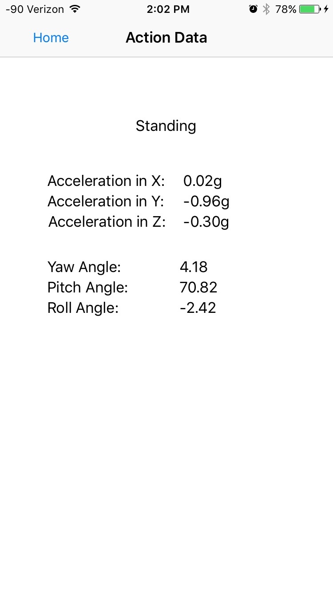

Combining Data
In smartphones the accelerometer and gyroscope allow you to capture the acceleration relative to the x-axis, y-axis, and z-axis as well as the angle of rotation around each axis. You can create training sets where you train the phone to identify motions such as sitting, walking, or laying down while the user has their smartphone in their pocket and record the movement data for comparison later.
In a smarthome environment you can collect data from motion sensors in each room to identify which room is being occupied. Energy use data from appliances can identify what the user is interacting with such as a microwave, washer, or TV.
By combining the data from these two you can potentially identify a user's actions and location within a smarthome environment. For example you could predict something such as a user standing in the kitchen using the microwave.
Predicting Action
Currently the program is set up to predict motion, the phone does not actively gather data from smarthome devices. When in the predict action mode, every movement has its data compared against the training sets mentioned earlier using the k-nearest neighbor algorithm. In this case I have it finding the 3 closest matches then choosing a predicted action by looking at which action is found the most in those matches.
You can adjust the number of k-nearest neighbor matches to search as well as the frequency of motion data being saved to get more accurate results (though potentially slower response because of increased data and processing).
Potential Uses
This can be useful to monitor those that may need assistance. A caregiver could be given live data to monitor activities which in turn could help chart progress of patients, know their locations, and aid in preventing or identifying potential problems.
Video Walkthrough
App Screens
|
|
Main MenuThere are two core parts to this app: adding movement data and predicting a movement. I've also included an option to view the movement action data stored on the phone. |
Add Action DataCreate a name for the action being recorded. You can then choose how long to record the action and the data retrieval rate. When storing the data directly to the iPhone it may not work as expected if you choose to have a data retrieval rate more than 10 times per second since it may not be able to keep up the process of storing the data that frequently. A one second start delay was added so that you have some time to get in position after pressing the start button. |
|
|
 |
Recording DataDisplays the action name you entered as well as the accelration and rotation of the x, y, and z axes. The accelerometer and gyroscope are both set to update using the interval listed on the previous screen (10 times per second by default). The app will save the data every time those values are updated and it will stop recording after the duration specified (2 seconds by default). |
|
|
Viewing DataAfter action data has been stored you can choose to view that data. The data stored includes a timestamp to the nearest hundredth of a second, accleration of the x, y, and z axes, and the rotational data (yaw, pitch, and roll) around the x, y, and z axes respectively. |
Predicting ActionDisplays the number ot training sets (rows of action data) that have been saved. This is the data compared against when predicting a user's action. The predicting movement section is updated 10 times per second using the current accelerometer and gyroscope data compared to the data stored in the training sets. The last two fields, predicted location and predicted action, are hypothetical since they would be populated from data gathered in a smart home environment. |

Future Work
By adding another smart wearable device such as a smartwatch you could gather even more data relating to someones health or actions. You would have data from arm motions as well as their heart rate. There's also a potential for using this to track children and their activities, though for practical use a different design of wearable technology may be needed since it is uncommon for infants and young children to have smartphones or smartwatches.